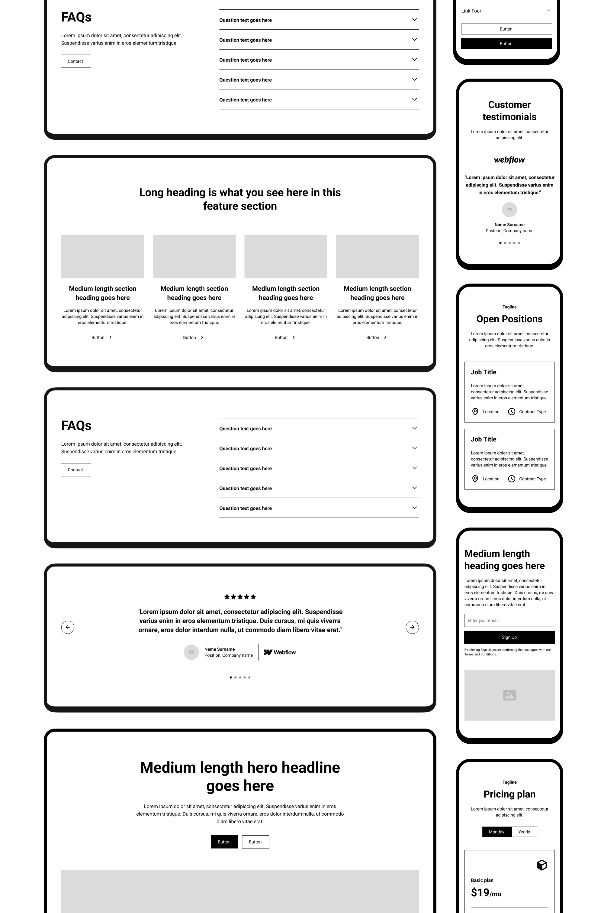

CC ULTIMATE Project Template
This is the official starter project for Relume Library, the largest Webflow component library in the world. It includes a style guide with pre-built classes and serves as an ideal starting point for any project using Relume Library.
Relume Library uses the Client-First Webflow Style System to keep your Webflow projects more organized and maintainable.
